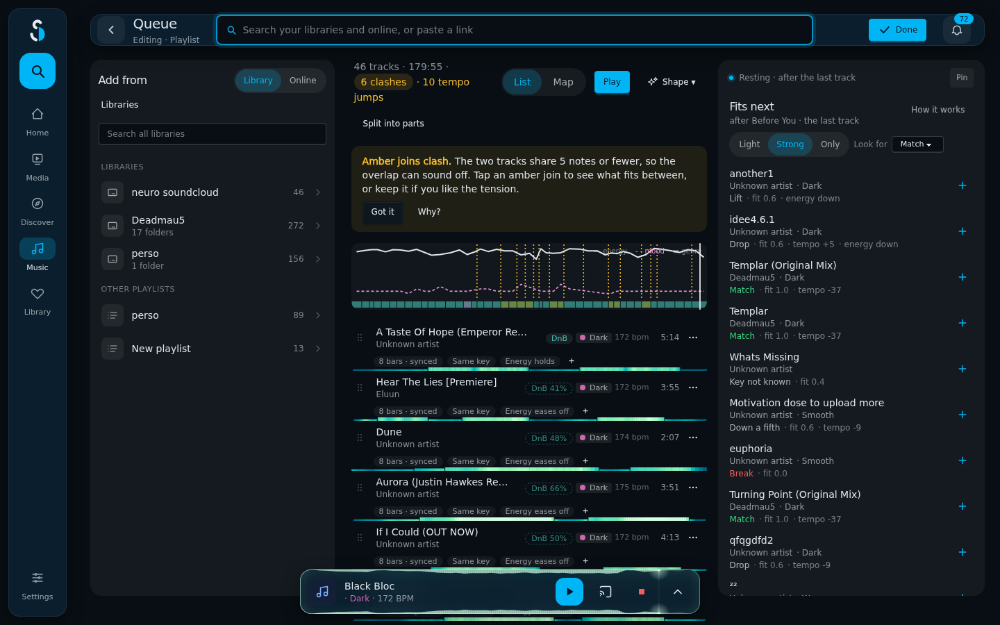
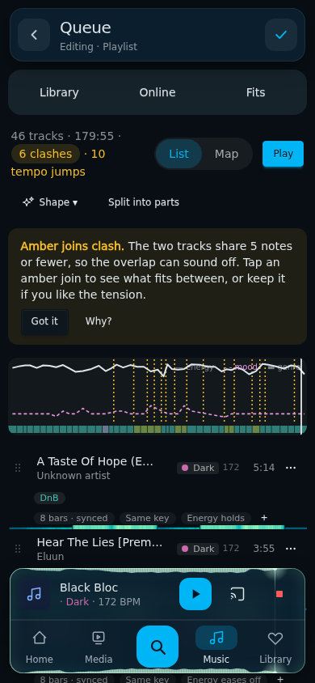

Real data: your Queue playlist, 46 tracks, 3h00. Everything below reuses the Lanes editor's parts: the label column, time ruler with hairlines every 30 minutes, the amber energy curve with its fade, tinted bricks with a dot, the Harmony colours (Bright, Warm, Dark, Exotic) and the 16px card. No legend text over the drawing, no white zig-zag, no pink dashed line, no wall of dotted amber lines.
Now · desktop

Now · phone

What clashes: a jagged white energy line, a pink dashed "mood" line nobody else uses, a saturated per-track genre ribbon, 16 dotted amber lines for clashes and tempo jumps, and the legend drawn on top of the curve. The flow editor next door says the same things with lanes, a smooth amber curve and tinted bricks.
The flow editor's lanes, filled in by the tracks. Energy, Genre, Harmony and Joins each get a row; runs of the same genre or key colour merge into one brick. A playlist reads as the flow it would be.
Desktop · middle column of the editor (pointer on track 21)
Phone
One brick per track, sized by length and tinted by its Harmony colour, under the energy curve. Joins sit in the gaps between bricks. Pointing at a brick or a gap aims Fits at it, exactly like pointing at a row or a join in the list.
Desktop · pointer on track 14, its row lit in the list
Phone · tap a brick to jump to its row
Only the flow editor's Energy lane, at full width: the curve and its fade, Harmony as a thin strip along its floor, genre changes named on the ruler, clashes as amber dots sitting on the curve.
Desktop
Phone